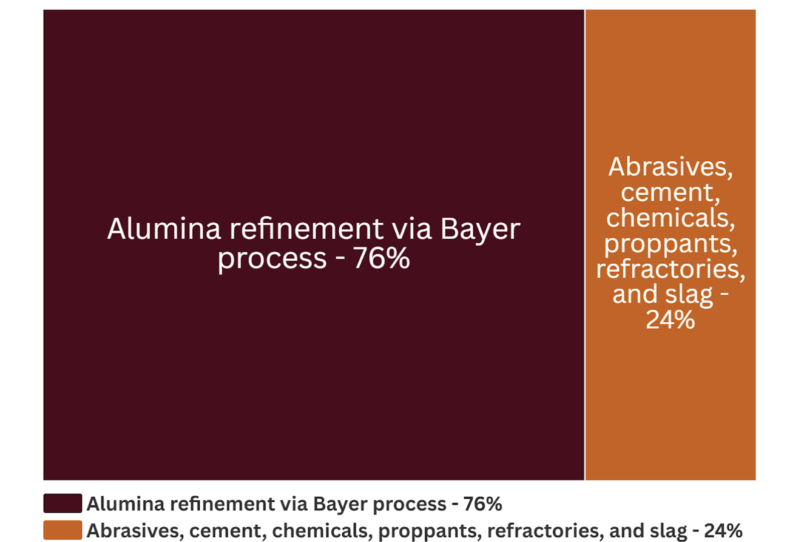
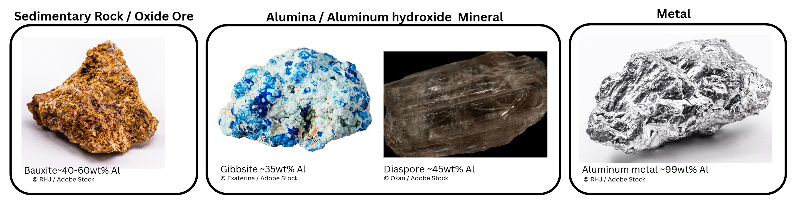

Bauxite is a naturally occurring rock that is rich in aluminum. These red rocks occur plentifully in the topsoil's of South America, Africa and Oceania. The red color is attributed to the presence of iron oxides. Before 2000 BC, other aluminum minerals, such as alum, a sulfate salt, were mined in ancient Egypt for dying and ceramic work. [1] Industrial scale aluminum metal production began in the late 1880s. Today the red mineral is processed into aluminum metal over the course of two major processes. [2]
1. Bayer Process: Refining Bauxite to Alumina
The first step of the standard process of producing aluminum metal is to refine bauxite into alumina via the Bayer Process which was invented in the late 1880s. This process separates the ferric impurities from the bauxite ore to produce alumina (aluminum oxide, Al2O3) and very alkaline waste called "red mud". [3]
The first step in the Bayer Process is to grind the mined bauxite ore into dust. The powder is then mixed at high pressures with a caustic sodium hydroxide solution and heated to above 100 °C. During this process, aluminum oxides dissolve into the solution, releasing them from bauxite's crystalline, solid structure. The slurry is then pumped to an industrial unit called a 'thickener'. A thickener is a cylindrical vat with a stirring rod that forces the insoluble impurities which are largely iron oxides to settle out. The remaining solution is subsequently filtered, and the solids are discarded as red mud. [3-5]
The filtered aluminum oxide-solution is mixed with a supersaturated sodium-aluminum solution to promote the spontaneous precipitation of aluminum hydroxide crystals. While most of the aluminum hydroxide precipitate is recycled to continue the crystallization process, some of the crystallized aluminum hydroxide solids are sent to a kiln for calcination. During this process, the aluminum hydroxide crystals are heated to temperatures above 1000 °C. At this temperature, aluminum hydroxide decomposes into alumina (aluminum oxide, Al2O3), releasing water vapor. After the water is evaporated off and the alumina is cooled, the white, coarse sand is exported by rail, truck and/or ship to smelters. [3-5]
2. Metal Smelting: Refining Alumina into Aluminum Metal
Smelters transform metal rich powders exported from mining projects into metal products. During the smelting process, alumina is heated to around 1000 °C and diluted with molten aluminum fluoride minerals to lower the solution's operating temperature to 950 °C. At this temperature, the Hall-Heroult Process is performed to precipitate aluminum metal from the molten aluminum solution via electrolysis [6-7].
The Hall-Heroult Process forces electrical gradients in the molten slurry to make aluminum metal collect at the bottom of the tank. This process was invented towards the end of the 19th century. It takes advantage of the fact that current, or the flow or electrons, move from electron rich sites to electron poor sites. The electron concentration gradient is created through immersing an electron rich electrode, which is typically made of carbon, into the vat of molten aluminum. The aluminum ions, which are cationic, disperse away from the rod, towards the bottom of the tank. Once enough aluminum metal collects at the bottom of the tank. The molten metal is siphoned out of the tank and poured into ceramic molds called crucibles. The metal can be cast on or near the smelting facility. If there is no nearby processing facility, the molten aluminum metal is cast into solid metal slabs. The product that is exported at this point is aluminum metal which has a higher market price than bauxite ore and alumina. [3-8]
What is bauxite used for?

Figure 1: Industrial uses of bauxite. Data source: USGS National Minerals Information Center, 2025.
What do some aluminum minerals look like?

Figure 2: Different types of aluminum containing materials.
Where are bauxite mineral deposits?

Figure 3: Global bauxite reserves as reported by the USGS. Data is from https://mrdata.usgs.gov/general/map-global.html
Who imports bauxite?
Click on the blue bubbles to see where bauxite is imported from.
Where is bauxite mined?
Scroll with your mouse or touchpad over the tagged locations on the map to zoom in/out.